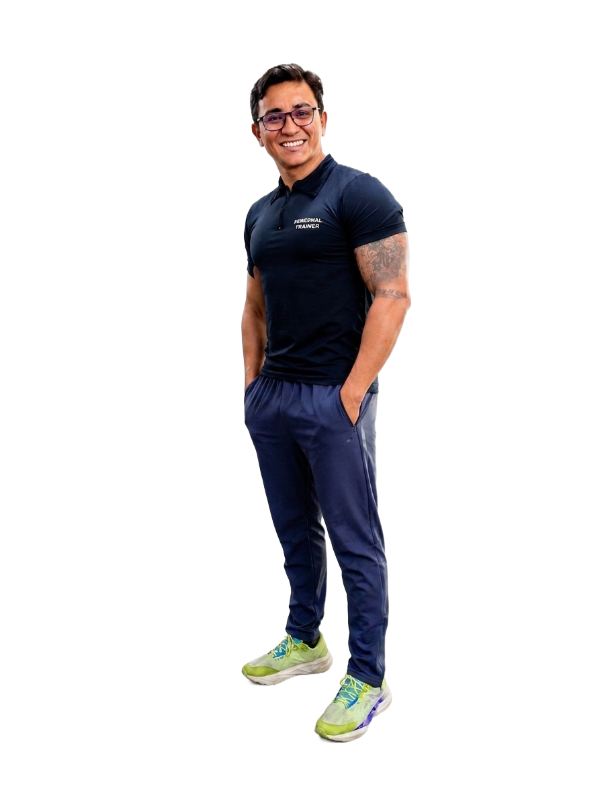

Rodrigo Bezerra
Meu nome é Rodrigo Bezerra, profissional de Educação Física, pós-graduado em Musculação Terapêutica e
Fisiologia Aplicada a Grupos Especiais. Dedico minha carreira a ajudar pessoas a recuperarem sua
qualidade de vida através do exercício físico seguro, individualizado e baseado em evidências
científicas.
Ao longo dos últimos anos, tive o privilégio de acompanhar milhares de pessoas que conviviam com dores
crônicas, limitações físicas e dificuldades para realizar atividades simples do dia a dia. Por meio da
Musculação Terapêutica e do Método RB, desenvolvi uma abordagem focada na redução da dor, melhora da
funcionalidade e fortalecimento do corpo de forma progressiva e segura.
Minha atuação é voltada para pessoas com diversas condições e patologias, incluindo hérnia de disco,
fibromialgia, artrose, problemas articulares, dores na coluna, além de grupos especiais que necessitam
de um acompanhamento mais cuidadoso e especializado.
Acredito que o movimento é uma das ferramentas mais poderosas para transformar vidas. Por isso, meu
compromisso vai além de prescrever exercícios: busco compreender a história de cada paciente, suas
limitações e objetivos, criando estratégias personalizadas que promovam saúde, autonomia e bem-estar.
Hoje, meu propósito é continuar impactando vidas, ajudando cada vez mais pessoas a reduzir suas dores,
recuperar sua confiança e conquistar uma melhor qualidade de vida através da Musculação Terapêutica.
Áreas de Atuação:
1° Hérnia de disco
2° Fibromialgia
3° Doenças patelares
4° Dores crônicas musculoesqueléticas
5° Condicionamento para cardiopatas
6° Fortalecimento terapêutico
7° Mobilidade e qualidade de vida para grupos especiais.
Mais do que treinos, Rodrigo oferece um acompanhamento próximo e acolhedor, ajudando seus alunos a
recuperarem a confiança no próprio corpo e a retomarem uma vida com mais disposição, movimento e saúde.
